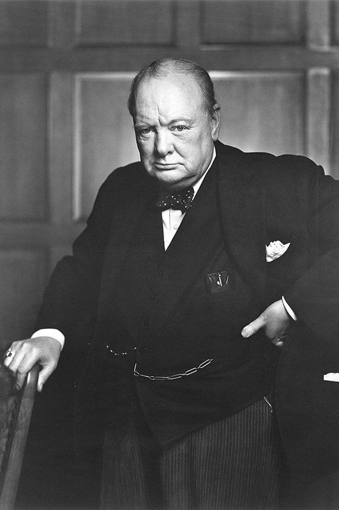

SumberWinston Churchill (1874–1965) Sir Winston Churchill adalah Perdana Menteri Inggris yang terkenal karena kepemimpinannya selama Perang Dunia II. Ia adalah politikus, penulis, dan orator hebat yang berperan besar dalam mempertahankan Inggris dari ancaman Nazi Jerman.
Nama lengkap: Winston Leonard Spencer Churchill Lahir: 30 November 1874 di Blenheim Palace, Oxfordshire, Inggris Orang tua: Lord Randolph Churchill (politisi) dan Jennie Jerome (seorang Amerika kaya) Pendidikan: Royal Military Academy Sandhurst Karier awal: Perwira militer, koresponden perang, dan politisi muda Churchill pernah bertugas di India, Sudan, dan Afrika Selatan. Ia menjadi terkenal setelah melarikan diri dari kamp tawanan perang selama Perang Boer (1899–1902).
1900: Terpilih sebagai Anggota Parlemen (MP) dari Partai Konservatif 1904: Berpindah ke Partai Liberal karena kecewa dengan kebijakan Konservatif 1908–1910: Menjadi Menteri Perdagangan, memperjuangkan reformasi sosial 1911–1915: Menjabat sebagai Menteri Angkatan Laut (First Lord of the Admiralty), berperan dalam modernisasi Angkatan Laut Inggris Namun, keterlibatannya dalam kegagalan Gallipoli (1915) saat Perang Dunia I membuatnya kehilangan jabatan dan sementara waktu meninggalkan politik.
Menjadi Perdana Menteri (1940–1945) setelah Neville Chamberlain mengundurkan diri Pidato legendaris: "We shall fight on the beaches…" (Kami akan bertempur di pantai…) memberikan semangat bagi rakyat Inggris Menjalin aliansi dengan Amerika Serikat dan Uni Soviet untuk melawan Nazi Jerman
Strategi Perang Dunia II: Menghadapi Blitzkrieg Jerman (serangan udara besar-besaran ke Inggris) Memimpin Inggris dalam Pertempuran Britania (1940) Berperan dalam Invasi Normandia (D-Day, 1944) yang membantu mengalahkan Jerman.
Kalah dalam Pemilu 1945, digantikan oleh Clement Attlee Menjadi Perdana Menteri lagi pada 1951–1955 Pada 1953, dianugerahi Hadiah Nobel Sastra atas buku-buku sejarah dan pidatonya Pensiun dari politik pada 1955, tetapi tetap berpengaruh dalam kebijakan dunia
Meninggal dunia: 24 Januari 1965 pada usia 90 tahun Mendapat pemakaman kenegaraan, dihadiri oleh lebih dari 100 pemimpin dunia Dikenang sebagai salah satu pemimpin terbesar dalam sejarah Inggris Churchill tidak hanya dikenal sebagai pemimpin perang yang brilian, tetapi juga sebagai orator hebat, penulis, dan tokoh yang berperan besar dalam mempertahankan demokrasi di Eropa.